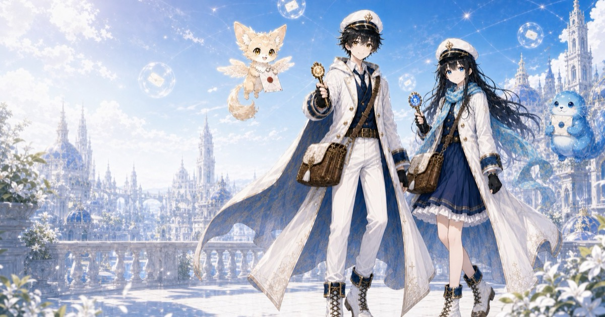
ノミネート作品50選ポスト・アニマ
詳細を見る 閉じる
人の心からこぼれた想いが、怪物になる世界。傷を抱えたクーリエたちは、消すのではなく「還す」ために魂の宛先を探し続ける——。世界観・物語・キャラクターから第1話映像まで手がけた、ポスタルファンタジー・アニメ企画。COLOTEK「次の100年愛されるアニメを。」でノミネート作品50選に選出。
NEWS
TapNow公式企画「ルミアと始まりの海」に、30秒のショートMV『ルミア』を投稿しました。作品ポスト
公式サイトを開設しました。
「真夜中の自分会議」が SousakuAI Agent Creation Cup 2026 Vol.2 で最優秀MV賞を受賞しました。受賞報告ポスト
AiHUB株式会社の提携クリエイターとして、「Pinyokio」に掲載されました。pinyo.jp
オリジナルアニメ企画「ポスト・アニマ」の公式紹介サイトを公開しました。公式サイトはこちら
「ナイモノネダリ」が SousakuAI Agent クリエイションカップ 2026 Vol.1 ビジュアル部門で最優秀ビジュアル賞を受賞しました。受賞報告ポスト
短編アニメ「人間（仮）、はじめます。」が WAIFF の一次選考を通過しました。
アニメティザー「声の羅針盤」を PocketANIME World Competition に出品しました。
WORKS
FEATURED
世界観・物語・キャラクターから映像まで一貫して作った、オリジナルのアニメ作品。いちばん長い時間をかけた2作です。

ノミネート作品50選人の心からこぼれた想いが、怪物になる世界。傷を抱えたクーリエたちは、消すのではなく「還す」ために魂の宛先を探し続ける——。世界観・物語・キャラクターから第1話映像まで手がけた、ポスタルファンタジー・アニメ企画。COLOTEK「次の100年愛されるアニメを。」でノミネート作品50選に選出。
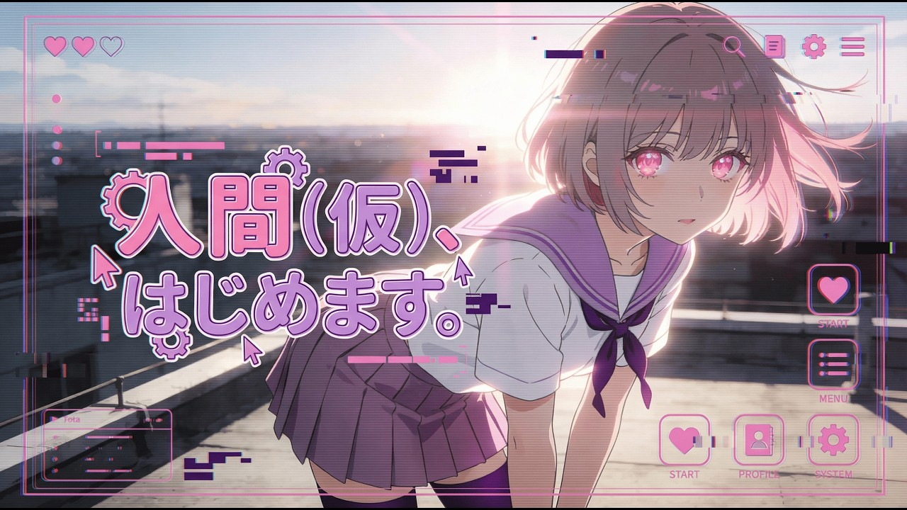
WAIFF 一次選考通過ヒューマノイドの少女 Rin は、誰よりも冷静に「最適解」を導き出せる。けれどその答えは、本当に誰かの心に届いているのか——。1つの存在として成長し続ける少女を描くヒューマンドラマ/SF。約1ヶ月をかけて制作。
PENNY'S HOUSE
ペニー・ステラ・ガブ、3人のシェアハウスの日常を描く3DCGシリーズ。縦型のミュージックビデオとショートを、レーベル BLANK ROOM から発信しています。
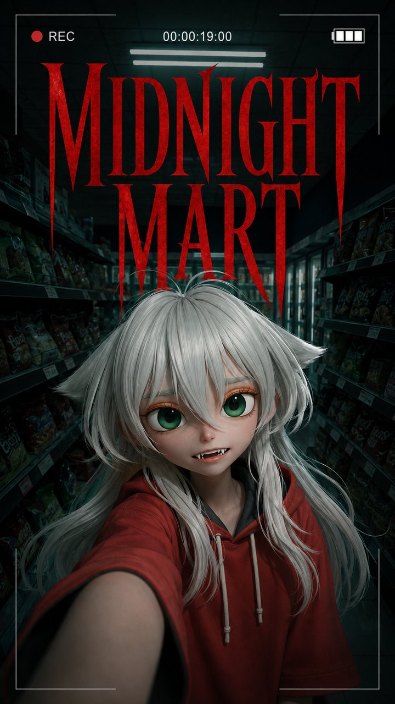
ホラー特別編深夜、夜食を買いに入ったスーパーマーケット。商品は棚いっぱい、機械も動いているのに、客はひとりもいない。レジには、まったく同じ顔の店員が2体——。ガブのスマートフォンに残されていた撮影データ、という体で綴るファウンドフッテージ・ホラー。Penny's House のノンカノン特別編。2分・セリフなし・BGMなし。
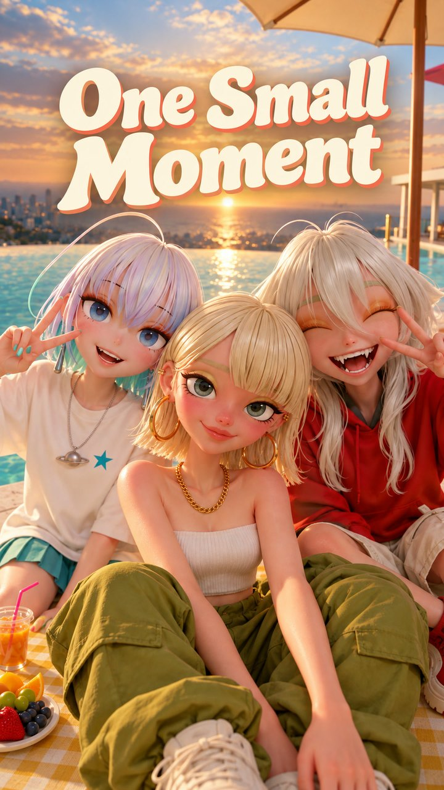
縦型MV昼のプールサイドから、夜のプールサイドまで。ペニー・ステラ・ガブの3人が、魚眼レンズのワンカット5本を歌い継ぐ1分18秒の縦型MV。mankyu さん（@manaimovie）の楽曲と魚眼ワンカットMVの設計を、Penny's House の3人に置き換えて制作しました。タイトルはフックの一節「One small moment, but it hit that way」から。
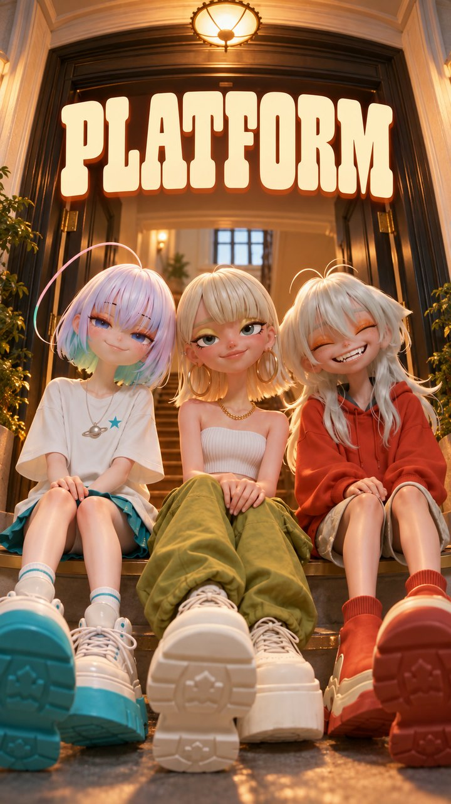
オリジナル曲終電のあとの高架駅の階段から、路地を抜けて、家の玄関まで。厚底靴のペニー・ステラ・ガブが、魚眼レンズのワンカットで歌い歩く48秒の縦型MV。曲も歌詞も自作のシティポップ／ヌーディスコ。PLATFORM＝厚底靴、駅のホーム、そして発信の場所。
NiL
オリジナルキャラクター、ニル（NiL）が歌うミュージックビデオのシリーズ。欠落、運命、自分自身、優しい暴力——4つの怒りを、声を荒げない静かな反抗に変えて歌う4曲。
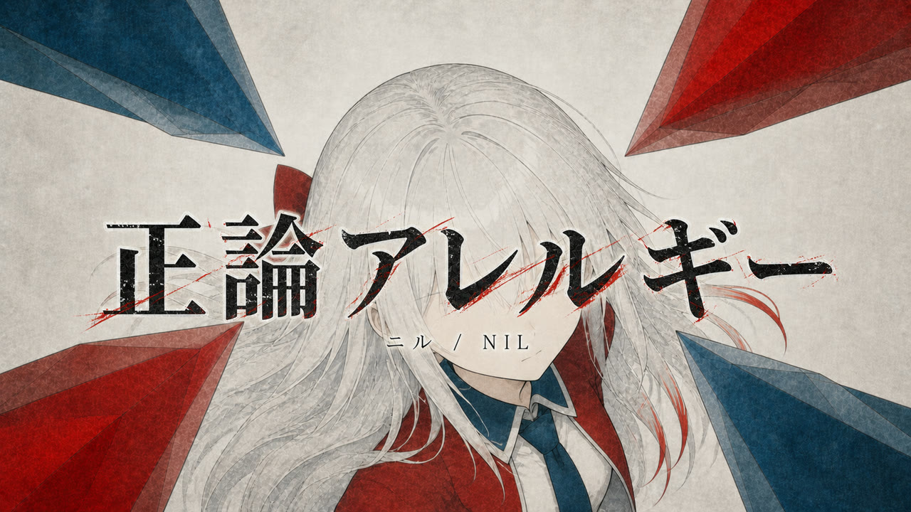
自主制作「あなたのため」と差し出された正論に、体のほうが先に拒絶反応を起こす——診察室を舞台に、説教や忠告という「優しい暴力」への静かな反抗を描いた2分41秒の自主制作MV。声を荒げず、咳き込むことで返事をするニル（NiL）の4曲目。
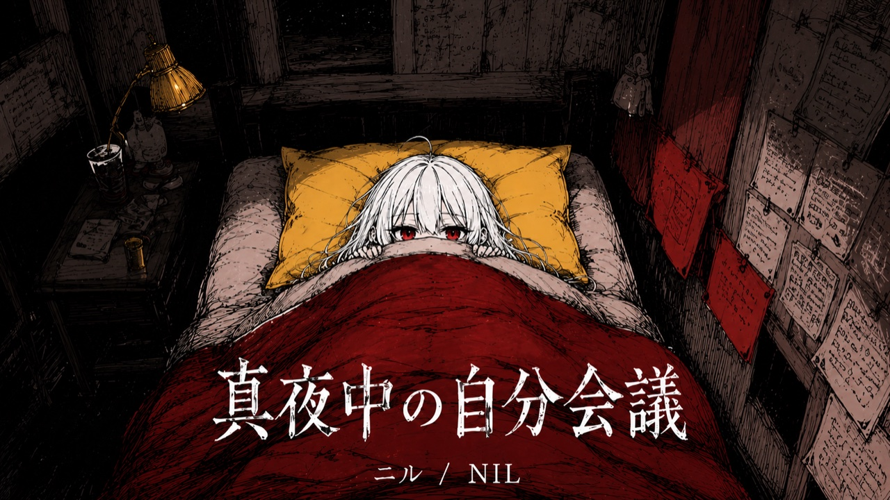
🏆 最優秀MV賞深夜2時。眠れないまま、頭の中でひとりぶんの「会議」が始まる——。議長も書記も裁かれる側も、全部おなじ一人の女の子。眠れない夜の思考ループを議事録・付箋・採決といった事務的なモチーフに置き換えて描いた、2分39秒のハイパーポップMV。SousakuAI Agent Creation Cup 2026 Vol.2 最優秀MV賞受賞。
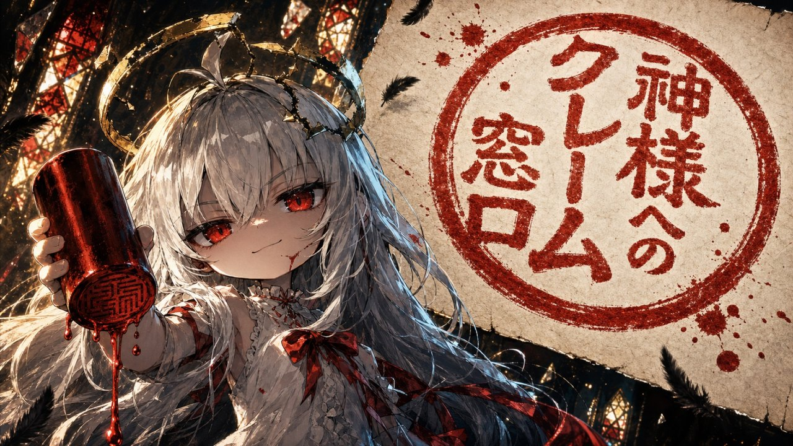
Zopia AI動画コンテスト 応募人生の不具合を神様に問い合わせたら、返ってきたのは「仕様です。」——だからニルは、舌打ちで天国の役所をぶっ壊す。白×赤×黒×金の「神聖×事務的」な世界に、申請書・赤いハンコ・壊れた光輪を散らした1分のダークポップMV。「ナイモノネダリ」に続く、ニル（NiL）の2曲目。
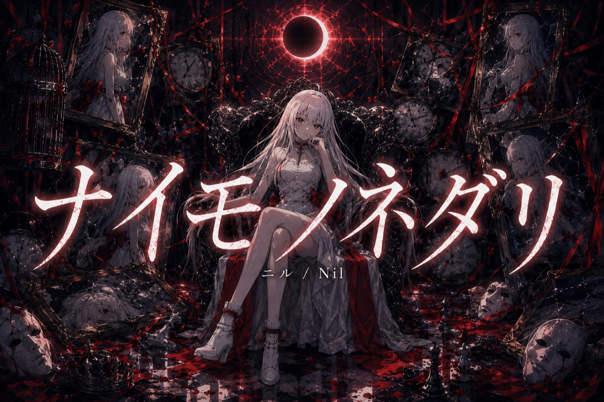
🏆 最優秀ビジュアル賞色のない白髪の少女ニルが、世界の彩り（＝他者の生）を断片的に纏っては失っていき、最後に「何にもなれないことの自由」を抱きしめる3分41秒のMV。SousakuAI Agent クリエイションカップ 2026 Vol.1 ビジュアル部門 最優秀ビジュアル賞受賞。
OTHER WORKS
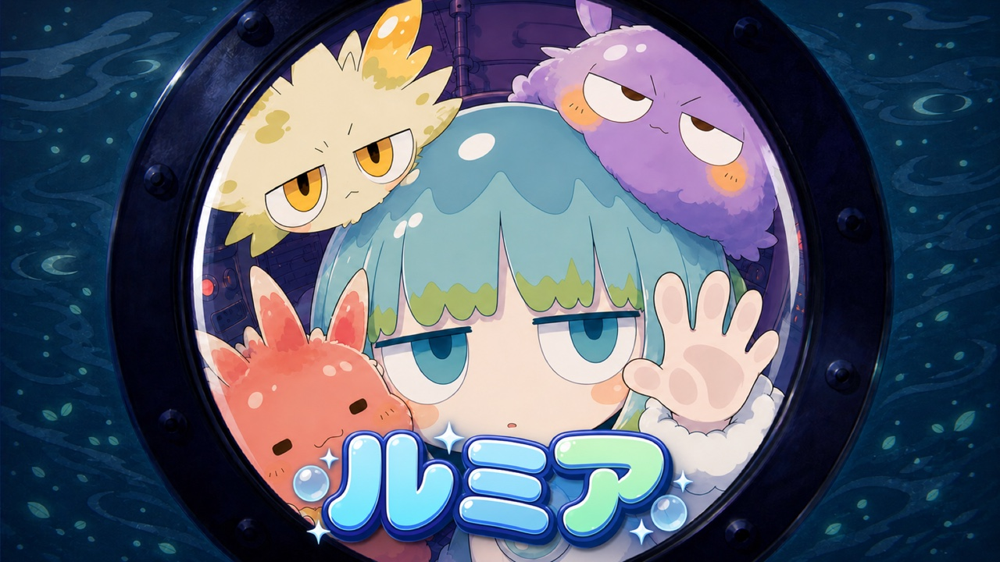
TapNow 企画参加TapNow公式企画「ルミアと始まりの海」参加作品。提供キャラクター・ルミアと仲間たちの世界を、楽曲『ルミア』にのせて描いた30秒のショートMV。きっかり30秒の中に、キャラクターたちの可愛さを詰め込みました。
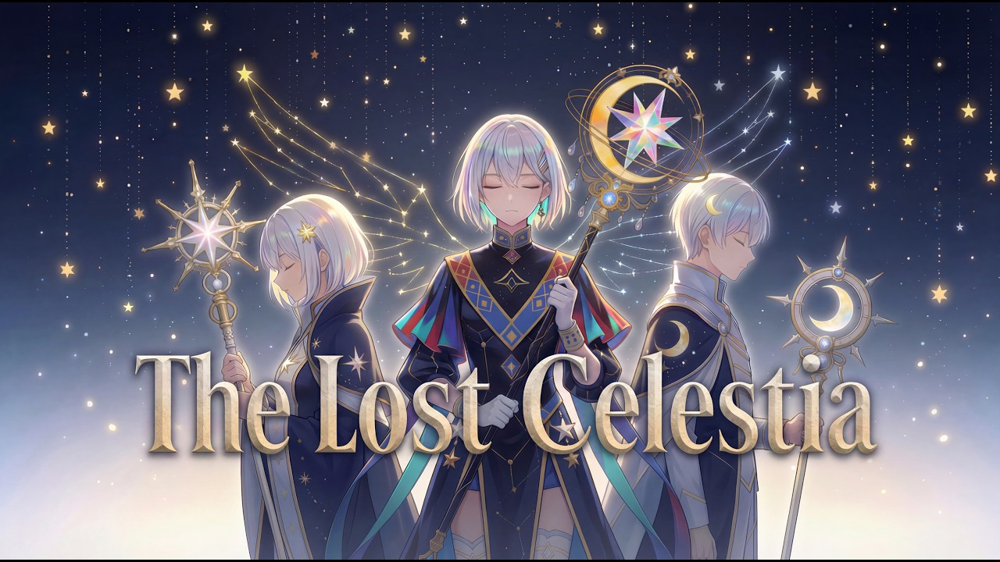
Seedance 2.0 × Lovart 出品自分の人生の一部を作品に反映させ、ファンタジーに置き換えて描いたショートアニメ。星の杖を携えた三人が、失われた星空の行方をたどる。Seedance 2.0 × Lovart コンテスト応募作品。
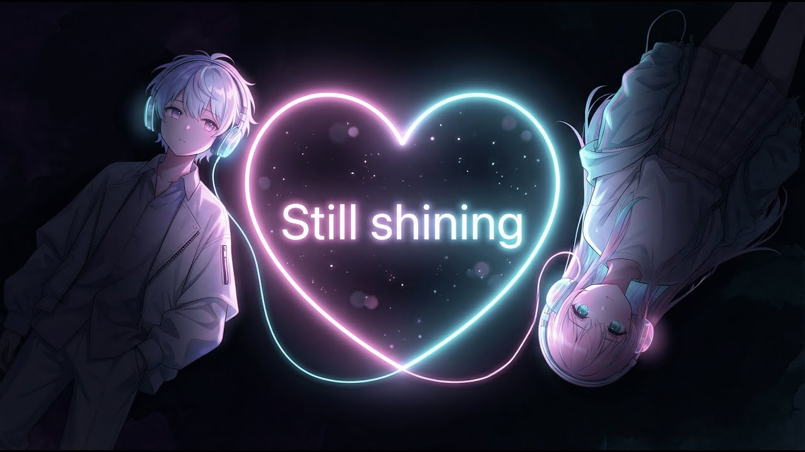
自主制作AIで制作した自主制作のミュージックビデオ。ネオンのハートを挟んですれ違う二人と、「君がくれた言葉」がまだ消えずに光り続ける夜を描いた一曲。
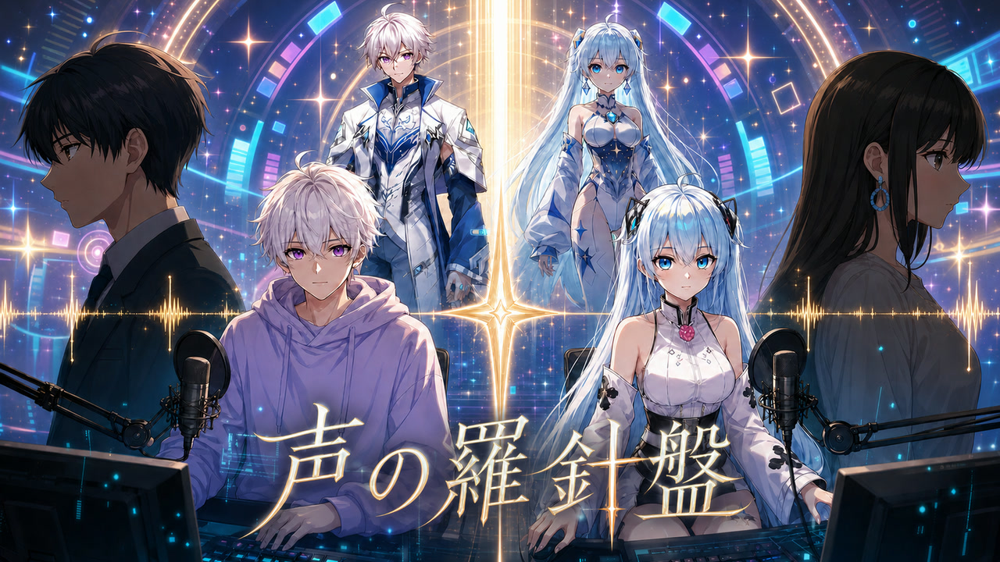
ENTRY動画生成AIに初めて本格的に取り組んだアニメティザー作品。PocketANIME World Competition に出品。ここからAIクリエイターとしての活動が本格的に始まりました。
PROFILE
AI CREATOR
「人の心を動かす」をテーマに、AIを創作パートナーとして物語・映像・キャラクターを制作しています。漫画やアニメが好きで、生成AIとの出会いをきっかけに創作活動を再開しました。見たあとに少し心に残る、何かのきっかけになる作品を目指しています。
AFFILIATIONAiHUB株式会社 提携クリエイター — 「Pinyokio」掲載
PocketANIME World Competition にアニメティザーを出品。動画生成AIに初めて本格的に取り組む。
WAIFF（World AI Film Festival）一次選考通過。約1ヶ月をかけて制作した約10分の短編アニメ。
SousakuAI Agent クリエイションカップ 2026 Vol.1 ビジュアル部門「最優秀ビジュアル賞」受賞。
オリジナルアニメ企画を立ち上げ、世界観・キャラクター・第1話映像・公式紹介サイトを制作。COLOTEK「次の100年愛されるアニメを。」でノミネート作品50選に選出。
SousakuAI Agent Creation Cup 2026 Vol.2「最優秀MV賞」受賞。最激戦区のMV部門での受賞。
LINKS
お仕事のご依頼・コラボのご相談は、X のDMまでお気軽にどうぞ。